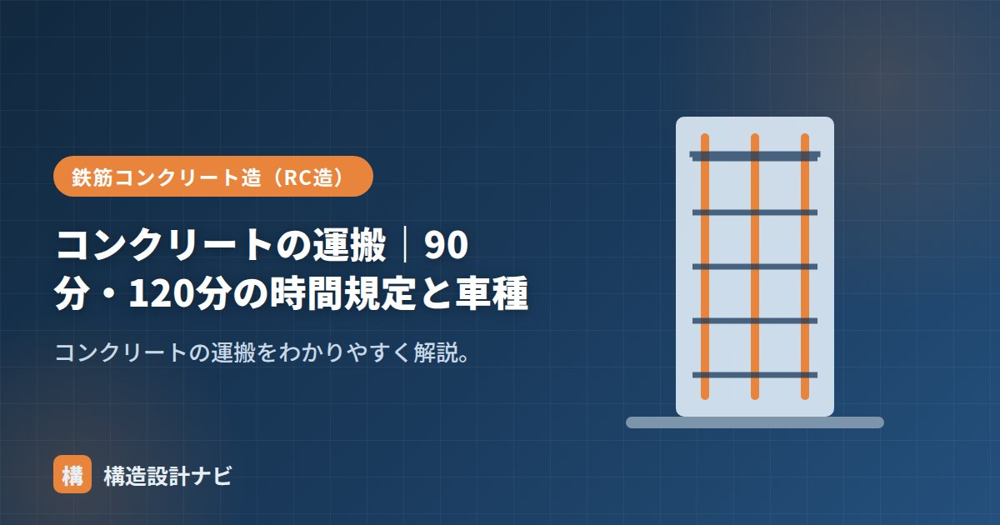

コンクリートの運搬｜90分・120分の時間規定と車種

コンクリートの運搬とは、生コン工場で練り混ぜたコンクリートを現場まで運び、打込みが完了するまでの一連の工程のことです。生コンクリートは練り混ぜた瞬間から水和反応が始まり、時間が経つほど流動性が落ち、品質が低下していきます。そのため運搬には厳格な時間の制限が設けられており、専用の車両を使って計画的に運ぶ必要があります。
- 練混ぜから打込み終了までの時間は外気温25℃以上で90分、25℃未満で120分以内
- ドラムを回転させ続けるトラックアジテータが最も一般的な運搬車両
- 時間超過時の加水は品質低下を招くため禁止されている
時間規定（90分・120分）
練混ぜから打込み終了までの時間は、外気温で次のように制限されます（JASS5）。
- 外気温25℃以上：90分以内
- 外気温25℃未満：120分以内
気温が高いほど凝結が早いため、許容時間が短くなります（→暑中コンクリート）。この時間は「生コン工場を出荷してから」ではなく「練り混ぜてから」のカウントである点にも注意が必要です。工場での練混ぜ完了時刻・現場到着時刻・打込み開始時刻・打込み終了時刻を、現場では受入検査の記録とあわせて管理します。
運搬の方法・車種
- トラックアジテータ（生コン車）：荷台のドラムをゆっくり回転させ続けることで、材料分離（骨材の沈降やブリーディング）を防ぎながら運ぶ。最も一般的な運搬車両。
- 打設場所へはコンクリートポンプ車やバケットで圧送・運搬する。高層階や敷地の奥まった位置への打込みでは、ポンプ車による圧送が広く用いられる。
- 近距離・小規模工事では、シュートやバケット荷卸しなど簡易な方法が使われることもある。
いずれの方法でも、運搬・打込みの過程で骨材とモルタルが分離しないよう、落下高さを抑える、シュートの角度に注意するといった配慮が求められます。
時間超過の影響
時間が超過すると、スランプ低下・コールドジョイント・強度低下を招きます。現場では到着時刻・荷卸し時刻を管理し、勝手に水を加える（加水）ことは禁止です。加水すると見かけ上の流動性は回復しますが、水セメント比が設計値より大きくなり、硬化後の強度・耐久性が大きく損なわれるためです。
時間超過したコンクリートを現場の判断だけで使用・廃棄を決めるのではなく、あらかじめ工事監理者・生コン工場と協議して基準を明確にしておくことが重要です。スランプが規定値を外れた場合の再試験・受入拒否のルールも事前に取り決めておきます。
よくある質問
Q1. なぜアジテータ車はドラムを回し続けるのですか？
停止させると内部で骨材が沈降し、セメントペーストとの分離（材料分離）が進んでしまうためです。低速で回転させ続けることで、練り混ぜた直後の均質な状態をできるだけ保ちながら運搬します。
Q2. 90分・120分を過ぎたら必ず使えなくなりますか？
規定時間はあくまで品質を確保するための目安であり、超過分は現場での判断・工事監理者との協議によって取り扱いが決まります。スランプや空気量が規定範囲を外れていれば、受入を拒否するのが基本的な対応です。
配達伝票の出荷時刻だけを見て安心するのは危険です。渋滞や荷卸し待ちで練混ぜからの経過時間はすぐ規定に近づくため、真夏の現場では伝票確認より先にスランプ・空気量の実測値を確認する順番を若手には徹底させています。
まとめ
- 練混ぜ〜打込み終了は、25℃以上で90分・未満で120分以内。
- トラックアジテータで運び、ポンプ車などで打設する。
- 時間超過はスランプ低下・コールドジョイントの原因。加水は禁止。
- 受入時の管理基準は事前に工事監理者・生コン工場と取り決めておく。